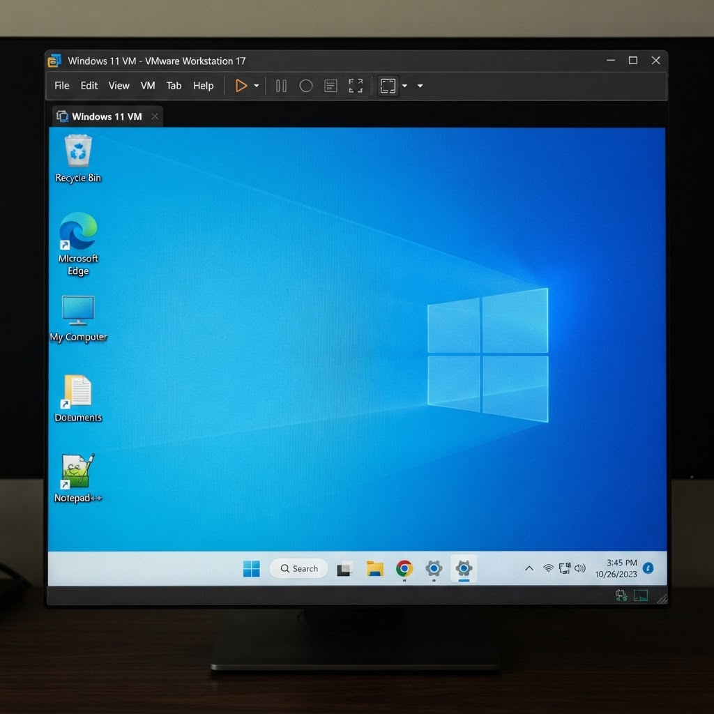

Programación
Aprender a crear programas y resolver problemas mediante código.
En esta página explico lo que he aprendido en el ciclo de Desarrollo de Aplicaciones Web, los módulos que he cursado y los proyectos que he realizado.
Aprender a crear programas y resolver problemas mediante código.
Cómo utilizar sistemas de etiquetas como HTML y CSS para estructurar, organizar, intercambiar y presentar páginas web.
Organizar información y aprender a trabajar con bases de datos.
Conocer sistemas operativos, redes y herramientas informáticas.
Dado aleatorio con PHP
Páginas web con HTML y CSS
Calculadora con JS

Máquinas virtuales: Ubuntu, Windows